Pterodactyl Panel
So... you want to host your own game servers?
Installation
Pterodactyl is an open-source game server management panel built with PHP, React, and Docker.
To install Pterodactyl, you will need a web server, a database, and Docker for running the game servers.
The installation process consists of setting up the Panel (web interface) and the Wings daemon (node service).
General steps:
- Install dependencies (PHP 8.x, Composer, Node.js)
- Configure MariaDB/MySQL database
- Install and configure the Pterodactyl Panel
- Install Docker
- Deploy Wings on your node server
Software requirements
• PHP 8.1 or newer
• MariaDB/MySQL database
• Nginx or Apache2
• Docker (required for Wings)
• Redis (recommended for performance)
Hardware requirements
You don’t need a monster server to start, but hardware depends on how many game servers you plan to host.
For small setups: 8GB RAM, SSD storage, and a modern CPU is recommended.
For production: 16GB+ RAM and NVMe storage will give much better performance and stability.
SECURITY
Hosting game servers exposed to the internet requires proper security configuration.
Make sure to configure a firewall, use SSL certificates (Let's Encrypt), and keep your system updated.
It is highly recommended to separate your Panel and Nodes properly and restrict root access.
Always use strong passwords and enable 2FA inside the panel.
Screenshots
Some views of the Pterodactyl panel in action.
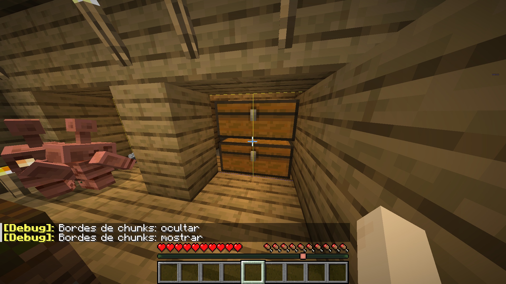
Server house
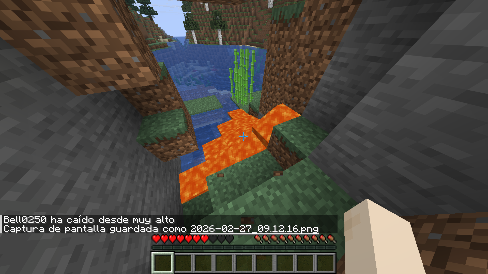
Server outside
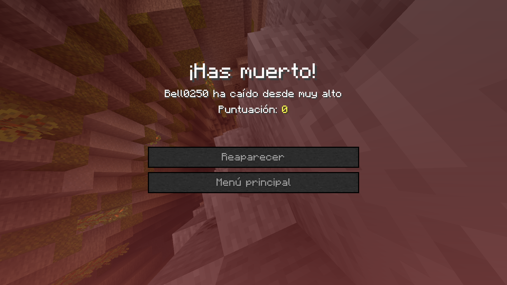
Woods
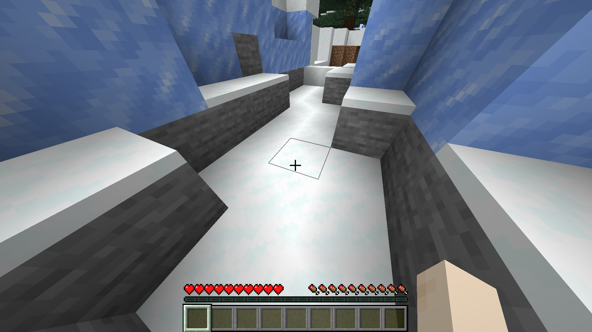
Why am I doing this?
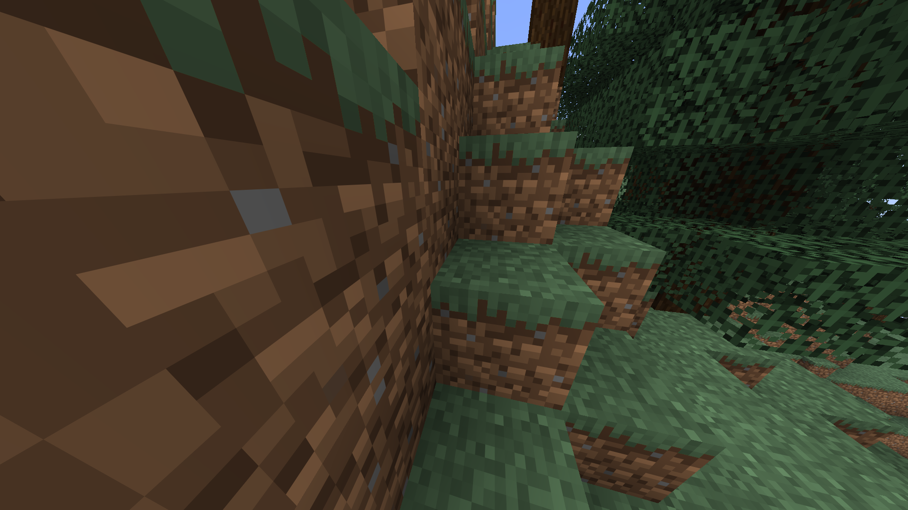
I'm bored as hell
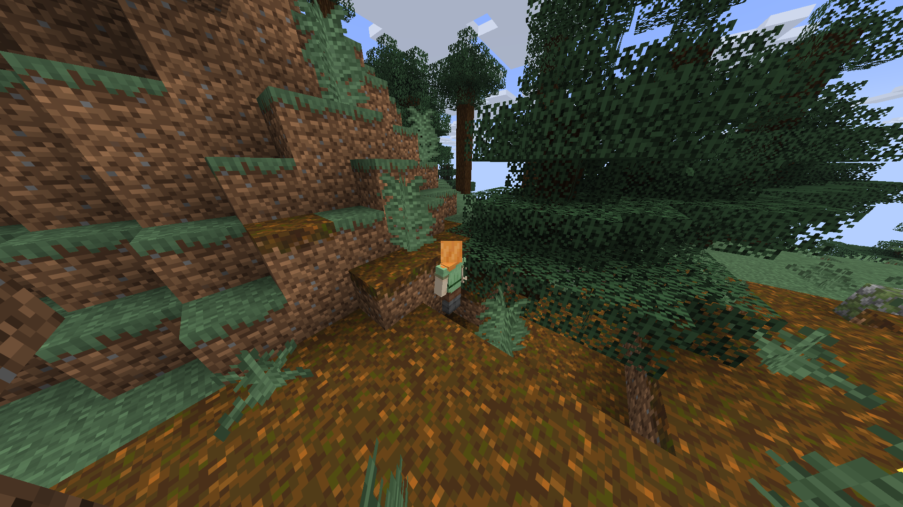
How about your day?
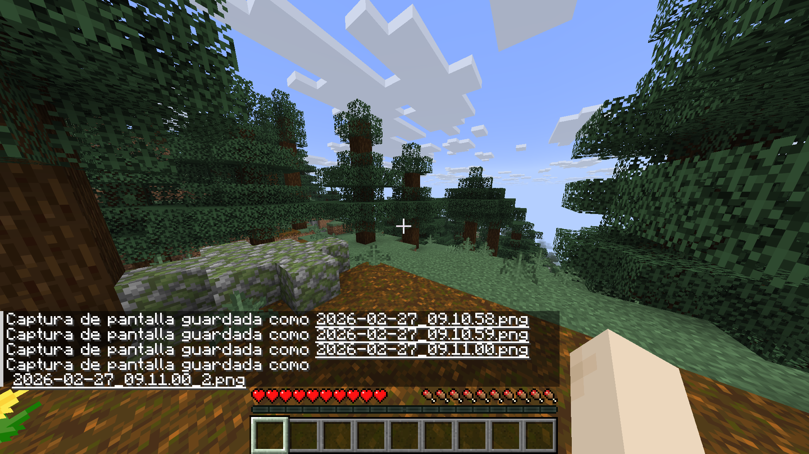
Hello
Nice to meet you
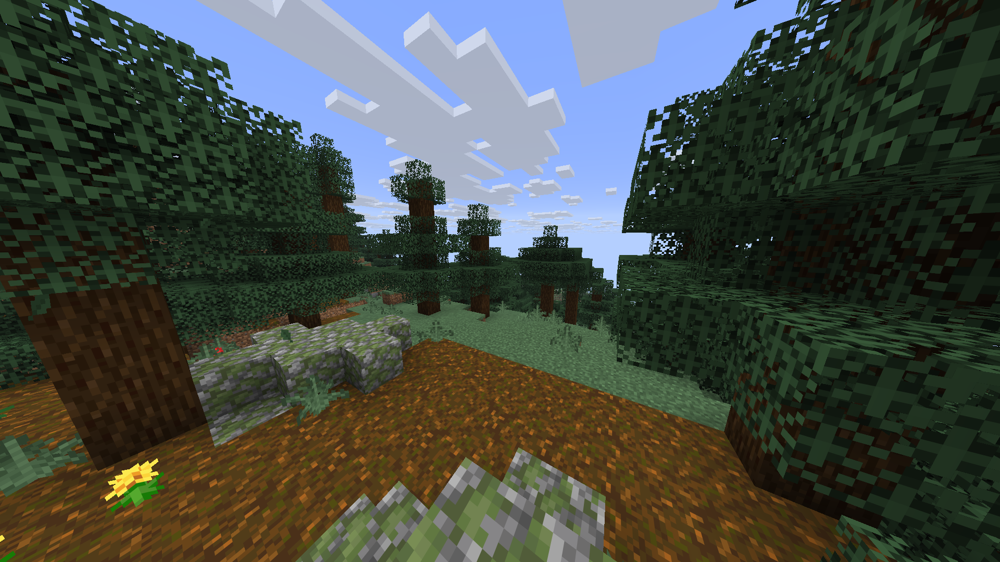
Panel dashboard
Server configuration
File manager
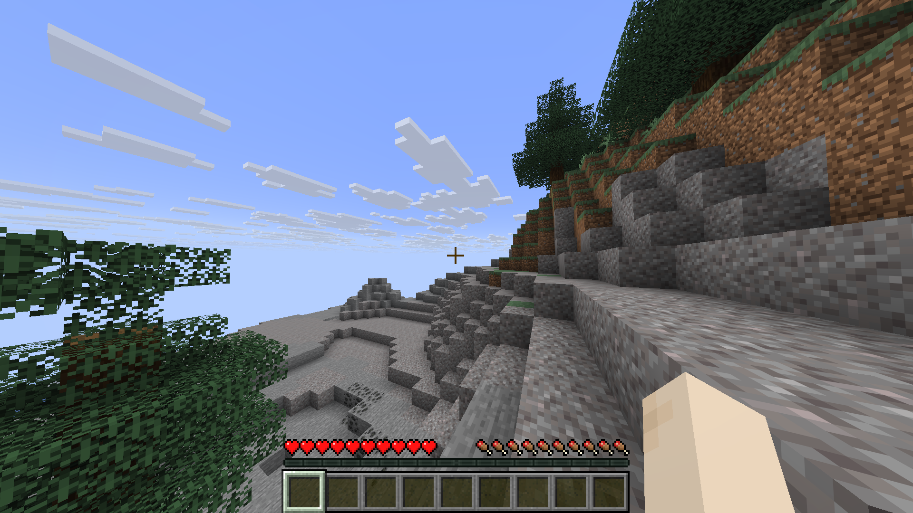
Console view
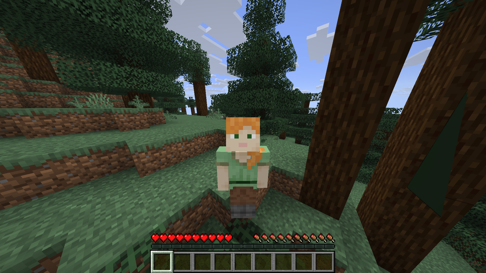
User management
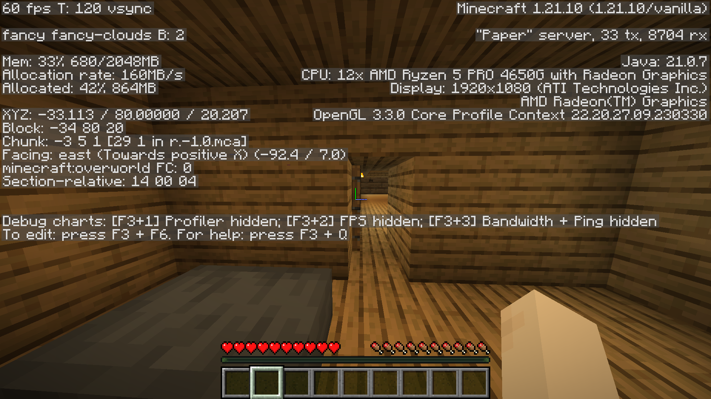
Node settings